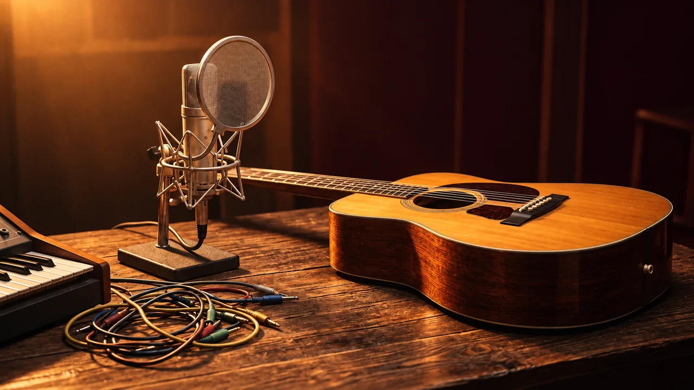

Clases individuales
Una ruta según tu nivel: teoría, lectura, oído, instrumento o creación. Videollamada; horarios y alcance por confirmar.
WALAMORT · CLASES Y TALLERES

Cuéntame qué quieres aprender o qué necesita tu grupo. Prepara una consulta clara y revisa el mensaje antes de enviarlo.
Preparar mi consultaLas clases y talleres actuales se imparten en español. Fecha, disponibilidad, materiales y precio requieren confirmación personal.

Una ruta según tu nivel: teoría, lectura, oído, instrumento o creación. Videollamada; horarios y alcance por confirmar.
Exploración instrumental, ritmo en equipo o creación de un beat. Define edad aproximada, duración y número de participantes.
Charlas-concierto y actividades para colegios, bibliotecas y equipos. Presencial en Medellín y Valle de Aburrá; otras opciones por consulta.
01 · Define
Objetivo, formato y contexto.
02 · Consulta
Envía el mensaje por el canal que prefieras.
03 · Confirma
Recibe y revisa una propuesta antes de reservar.
Este formulario solo prepara un mensaje. No envía datos ni confirma una reserva. No escribas datos sensibles ni información individual de estudiantes.
¿Prefieres escribir directamente? hola@walamort.com
Solo se comparte el mensaje si decides enviarlo en WhatsApp o correo. El envío y la respuesta no constituyen confirmación automática de cupo.